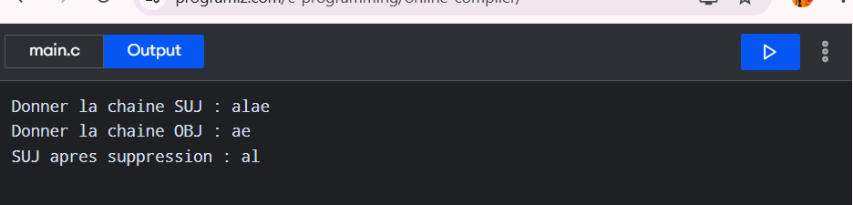
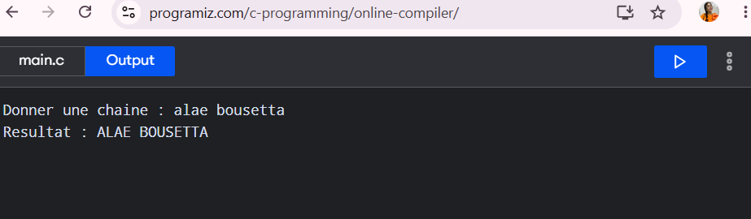
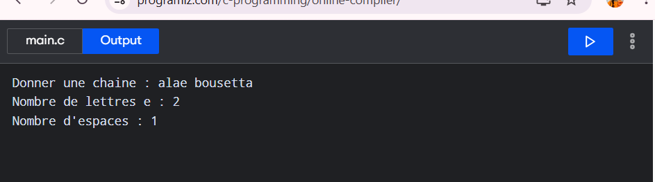

Langage C
Trois programmes en C sur les chaînes de caractères, et une comparaison entre Python et C.
Programme 1 : supprimer la première occurrence d'un mot
Notions utilisées : chaînes de caractères, pointeurs, fonctions strstr et strlen, boucle for.
Le problème
L'utilisateur tape une phrase (SUJ) et un mot (OBJ). Le programme supprime la première fois où le mot apparaît dans la phrase.
Le code
#include <stdio.h>
#include <string.h>
void removeFirstOccurrence(char SUJ[], char OBJ[]) {
int i, pos, L;
char *p = strstr(SUJ, OBJ); // cherche OBJ dans SUJ
if (p != NULL) {
pos = p - SUJ; // position où OBJ commence
L = strlen(OBJ); // nombre de cases à supprimer
for (i = pos; SUJ[i + L] != '\0'; i++)
SUJ[i] = SUJ[i + L]; // on ramène la suite vers la gauche
SUJ[i] = '\0';
}
}
int main() {
char SUJ[100], OBJ[100];
printf("Donner la chaine SUJ : ");
fgets(SUJ, 100, stdin);
SUJ[strcspn(SUJ, "\n")] = '\0'; // enleve le \n de Entree
printf("Donner la chaine OBJ : ");
fgets(OBJ, 100, stdin);
OBJ[strcspn(OBJ, "\n")] = '\0';
if (strstr(SUJ, OBJ) == NULL)
printf("OBJ n'existe pas dans SUJ\n");
else {
removeFirstOccurrence(SUJ, OBJ);
printf("SUJ apres suppression : %s\n", SUJ);
}
return 0;
}Comment ça marche
strstr renvoie un pointeur vers l'endroit où le mot commence dans la phrase. p - SUJ donne sa position. Ensuite, je décale tous les caractères suivants vers la gauche, de la longueur du mot, et je remets '\0' à la fin.
Résultat

Difficultés rencontrées et solutions
- J'avais oublié
#include <stdio.h>et#include <string.h>. Sans eux, le compilateur ne connaît pasprintfetstrstr. - Mes accolades étaient mal placées à la fin de la fonction. Je les ai remises dans le bon ordre.
Programme 2 : inverser majuscules et minuscules
Notions utilisées : boucle while, conditions, table ASCII.
Le problème
Transformer chaque majuscule en minuscule et chaque minuscule en majuscule. Par exemple, « Bonjour ISET » devient « bONJOUR iset ».
Le code
#include <stdio.h>
#include <string.h>
void convertCase(char ch[]) {
int i = 0;
while (ch[i] != '\0') {
if ('A' <= ch[i] && ch[i] <= 'Z')
ch[i] = ch[i] + 32; // majuscule -> minuscule
else if ('a' <= ch[i] && ch[i] <= 'z')
ch[i] = ch[i] - 32; // minuscule -> majuscule
i++;
}
}
int main() {
char ch[100];
printf("Donner une chaine : ");
fgets(ch, 100, stdin);
ch[strcspn(ch, "\n")] = '\0'; // enleve le \n de Entree
convertCase(ch);
printf("Resultat : %s\n", ch);
return 0;
}Comment ça marche
Dans la table ASCII, une minuscule est toujours 32 cases après sa majuscule : 'A' vaut 65 et 'a' vaut 97. Pour passer de l'une à l'autre, j'ajoute ou j'enlève 32.
Résultat

Difficultés rencontrées et solutions
- Avec
scanf("%s"), le programme s'arrêtait au premier espace. J'ai utiliséfgetspour lire toute la phrase.
Programme 3 : compter les « e » et les espaces avec des pointeurs
Notions utilisées : fonctions, pointeurs (passage par adresse), boucle for.
Le problème
Compter combien de fois la lettre « e » apparaît dans une phrase, et combien il y a d'espaces.
Le code
#include <stdio.h>
void nombre(char ch[], int *nbE, int *nbEspaces) {
int i;
*nbE = 0;
*nbEspaces = 0;
for (i = 0; ch[i] != '\0'; i++) {
if (ch[i] == 'e')
*nbE = *nbE + 1;
if (ch[i] == ' ')
*nbEspaces = *nbEspaces + 1;
}
}
int main() {
int nbE, nbEspaces;
char ch[100];
printf("Donner une chaine : ");
fgets(ch, 100, stdin);
nombre(ch, &nbE, &nbEspaces);
printf("Nombre de lettres e : %d\n", nbE);
printf("Nombre d'espaces : %d\n", nbEspaces);
return 0;
}Comment ça marche
Une fonction ne peut renvoyer qu'une seule valeur avec return. Ici, je dois en renvoyer deux, alors je passe les adresses des variables (&nbE). Grâce aux pointeurs, la fonction modifie directement les variables du main.
Résultat

Difficultés rencontrées et solutions
- Mes deux affichages disaient « Resultat », donc on ne savait pas quel nombre était quoi. Je les ai renommés.
- J'ai donné des noms plus clairs aux variables :
nbEetnbEspacesau lieu desetj.
Comparaison Python / C
| Critère | C | Python |
|---|---|---|
| Syntaxe | Je mets des ; à la fin des lignes et des { } pour les blocs. |
Je mets : et j'utilise l'indentation. Python est plus court à écrire. |
| Typage | Je dois déclarer la variable avec son type (int i). |
Je ne donne pas le type : Python le devine à partir de la valeur (i = 0). |
| Mémoire | C'est le programmeur qui gère la mémoire : il choisit la taille du tableau (char ch[100]). |
La mémoire est gérée automatiquement : une liste s'agrandit toute seule avec append. |
| Rapidité | Plus rapide, car il est compilé : traduit en langage machine avant l'exécution. | Plus lent, car il est interprété : lu ligne par ligne pendant l'exécution. |
| Usages | Systèmes d'exploitation, électronique et microcontrôleurs (Arduino). | Intelligence artificielle, analyse de données, scripts pour automatiser des tâches. |
Transparence IA
Outils utilisés : Programiz (pour exécuter le code), Claude.
Rôle de l'IA : Claude a testé mes programmes, m'a expliqué mes erreurs, m'a posé des questions pour m'aider à remplir le tableau et a corrigé mon français.
Ce que j'ai fait moi-même : j'ai écrit les trois programmes, compris et appliqué les corrections, répondu aux questions du tableau avec mes mots, exécuté les programmes et fait les captures d'écran.
Sources vérifiées : mon cours de langage C (ISET Nabeul).